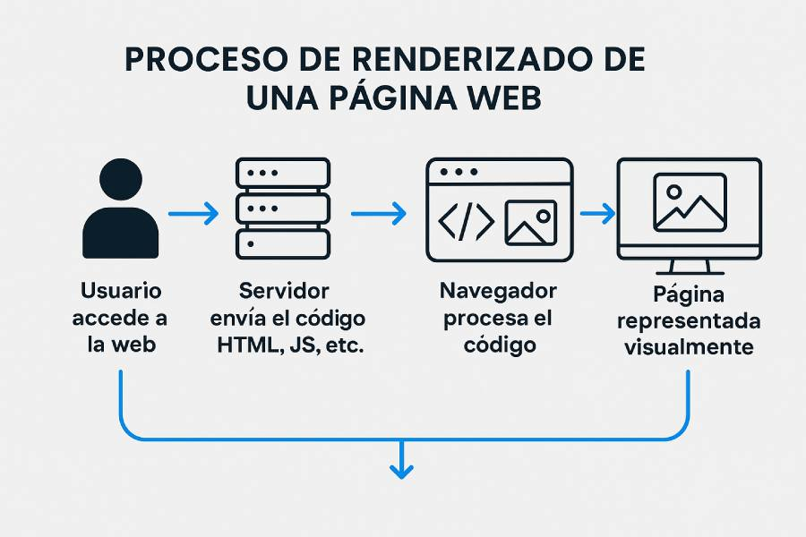

Paso 4: El Navegador interpreta el HTML
El navegador recibe los paquetes de datos y empieza a leer el documento HTML de arriba hacia abajo. En esta fase construye el árbol DOM (Document Object Model) y renderiza visualmente los elementos en la pantalla del usuario.

Importancia de la Semántica en HTML5
Las etiquetas semánticas le aportan significado estructural al documento, facilitando la accesibilidad y el posicionamiento SEO.
<header>: Define la cabecera de la página o sección.<nav>: Contiene los bloques de enlaces de navegación.<main>: Define el contenido principal y único del documento.<article>: Representa una composición autónoma e independiente.
Muestra de Código Estructurado
| Bloque Código | Uso Recomendado |
|---|---|
<section> |
Agrupar temáticas lógicas dentro del main. |
<footer> |
Cierre con derechos de autor e información de contacto. |